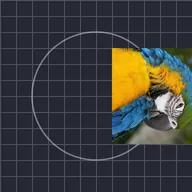

パスに沿って移動

レイヤーを、すぐ下にあるレイヤーの輪郭に沿って途中まで配置します。
設定
| 設定項目 | 種類 | 範囲 | デフォルト |
|---|---|---|---|
| 進行度 | 数値 | 0%〜100% | 0% |
| 向き | 角度 | -3600°〜3600° | 0° |
| 自動回転 | オン／オフ | – | オン |
| インセット/アウトセット | 数値 | -500〜500 | 0 |
| オフセット | ポイント（X, Y） | -5000 px〜5000 px | 0 px, 0 px |

レイヤーを、すぐ下にあるレイヤーの輪郭に沿って途中まで配置します。
| 設定項目 | 種類 | 範囲 | デフォルト |
|---|---|---|---|
| 進行度 | 数値 | 0%〜100% | 0% |
| 向き | 角度 | -3600°〜3600° | 0° |
| 自動回転 | オン／オフ | – | オン |
| インセット/アウトセット | 数値 | -500〜500 | 0 |
| オフセット | ポイント（X, Y） | -5000 px〜5000 px | 0 px, 0 px |